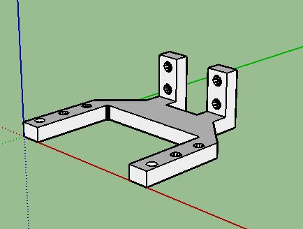
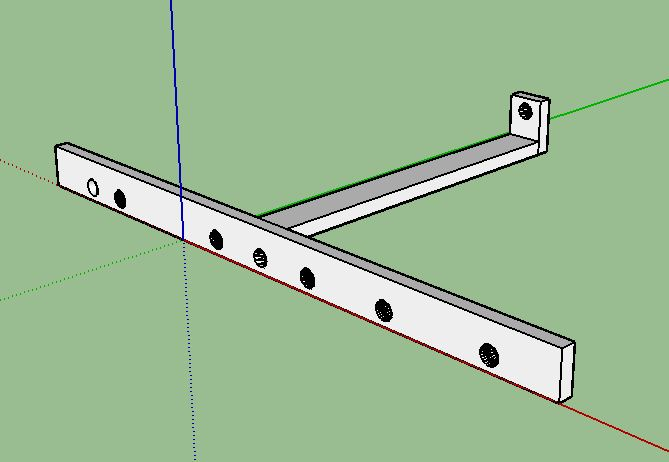
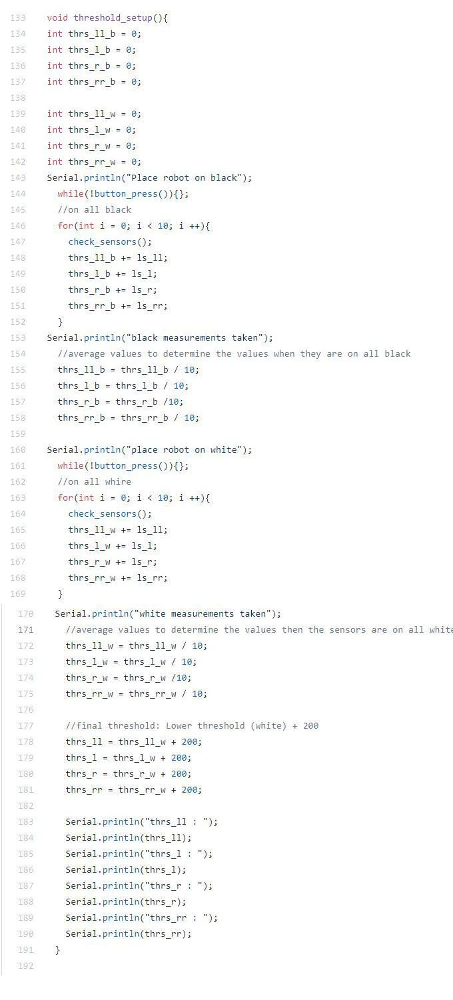

All of our files can be found on in our github repository here:
3D Printer Files
Servo Mounts
Servo mount files that were provided were edited to give the robot some more height. We extended the part and added an extra set of holes to elevate the robot.
Sensor Holders
We made a line sensor holder to keep all the line sensors at the same height above the ground. This made finding the thresholds between white and black surfaces much easier.
Printed Circuit Board (and why we didn't use one)
Threshold Helper Code
Throughout the course of this lab, we encounted the issue that the values of the line sensor would change everytime we upload new code, or change the portable battery. In response, we decided to make a semi-automated threshold value finder code that would take samples of values of the white sensor value, black sensor value, and calculate an intermidiate threshold value for each line sensor.
Below is our threshold helper code:
